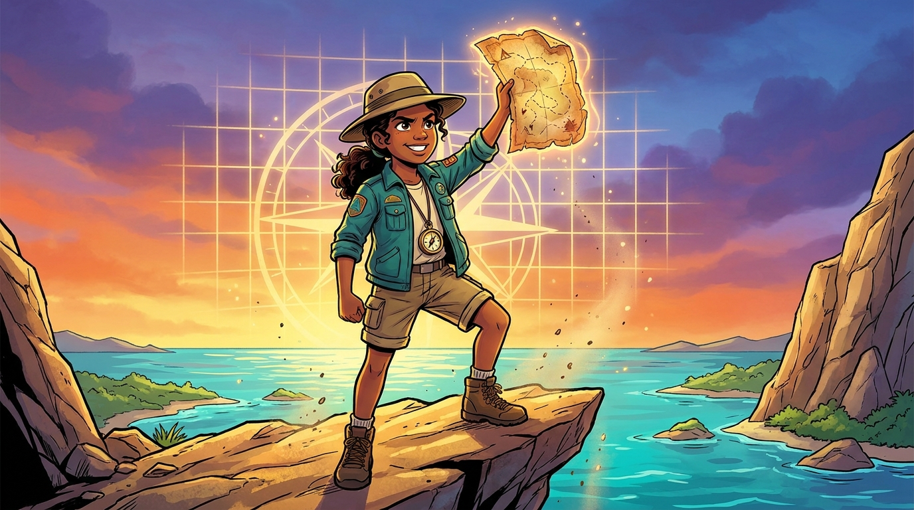
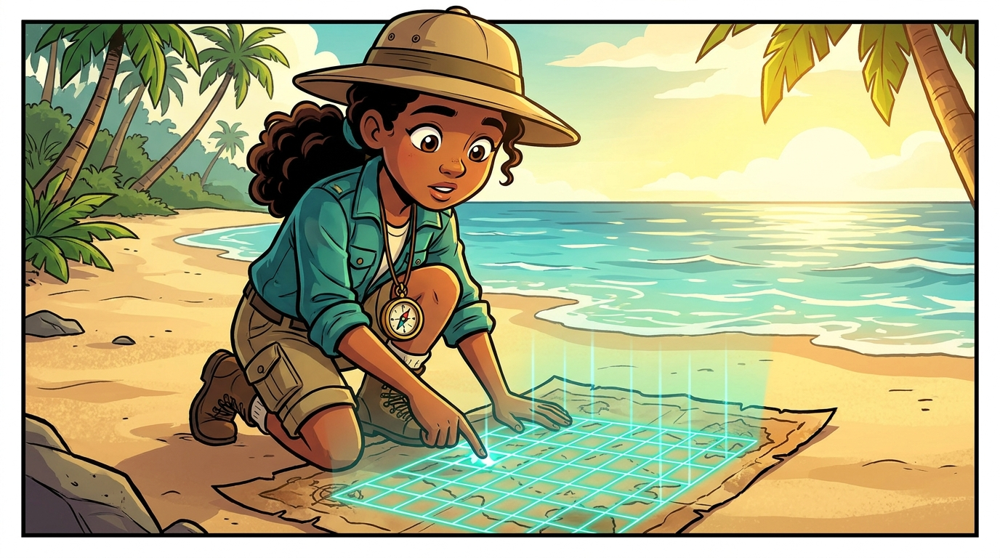
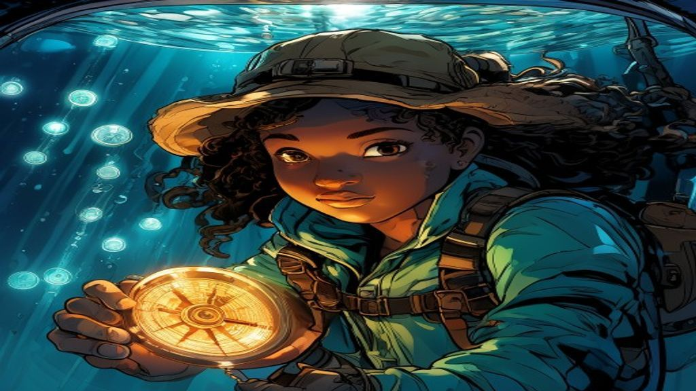
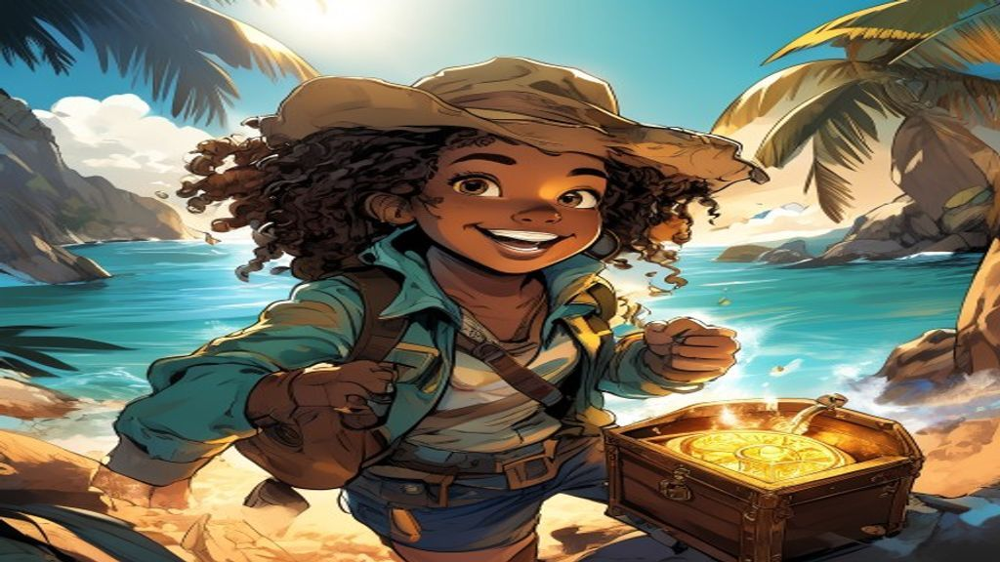

Treasure Map Navigator
You are Maya, a young explorer. You found an old treasure map! To reach the treasure, you must plot points on a grid and use integers (numbers above and below zero). Let’s go!
Eres Maya, una joven exploradora. Para llegar al tesoro, debes marcar puntos en una cuadrícula y usar números enteros (arriba y abajo de cero).
The Map Grid

Above & Below the Sea

X Marks the Spot

Treasure Found!
You did it, Maya! You used the coordinate plane to plot the path and integers and absolute value to find how deep the chest was buried. The gold is yours. Amazing navigating!
¡Lo lograste! Usaste el plano de coordenadas y los números enteros para encontrar el tesoro. ¡Excelente!
Prove your rank to certify your Master Certificate!
Deep dive elevation: What is the absolute value of −15?¿Cuál es el valor absoluto de −15?